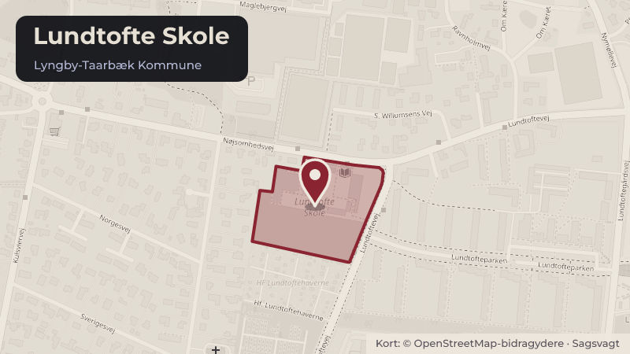

Besluttet 22. januar, Økonomiudvalget, Lyngby-Taarbæk
Evaluering og forslag om forlængelse af Next Step
Skoler og børnBudget og økonomi

Kort fortalt
- Hvem
- Økonomiudvalget, Lyngby-Taarbæk Kommune
- Hvornår
- Torsdag 22. januar 2026
- Status
- Besluttet. Anbefalet.
- Næste skridt
- Såfremt udvalget følger forvaltningens anbefaling, vil der blive afsat midler til forlængelse af tilbuddet i skoleåret 2026/2027, hvorefter der i Budget 2027-2030 er mulighed for at drøfte en eventuel varig etablering.
Er noget forkert her? Skriv til os
Læs hele sagen Kommunens egen tekst
Indstilling
Forvaltningen foreslår, at tilbuddet Next Step forlænges med indtil videre et halvt år, så
tilbuddet kan fortsætte skoleåret 2026/2027 ud, og at det ekstra halve år, svarende til 1 mio. kr.,
finansieres via de 2 mio. kr., der i Budget 2025 blev afsat varigt til trivselsindsatser på skolerne
(scenarie 3).
Problemstilling
Next Step er målrettet unge i mistrivsel, som kognitivt befinder sig inden for normalområdet,
men igennem længere tid har oplevet udfordringer med at trives i en skolekontekst og har et
specialpædagogisk støttebehov og behov for specialundervisning. Det særlige ved tilbuddet er,
at det samtidig har en tæt tilknytning til almenområdet bl.a. ved fysisk at være placeret på en
almen skole.
Skoleudvalget fik på et møde i september 2025 en orientering om de foreløbige erfaringer på
baggrund af det første halve år i projektet (bilag). Der er nu foretaget en endelig evaluering af
hensyn til muligheden for at kunne planlægge det kommende skoleår i overensstemmelse med
projektets fremtid (bilag).
På et udvalgsmøde i marts 2025 fik Skoleudvalget forelagt en plan for opfølgningen på
pilotprojektet. Her blev det beskrevet, at evalueringen ville have to fokusområder: 1) Hvorvidt
den unges tilknytning til et skoletilbud er i udvikling, målt ud fra fra fem succeskriterier opstillet
af forvaltningen og 2) Indsamle erfaringer fra skolen med, hvilke elementer der er med til at
skabe udvikling hos målgruppen.
Disse fokusområder og de dertil hørende succeskriterier er retningsgivende for den vedlagte
evaluering. Da tilbuddet har en relativt lille elevgruppe, afrapporteres der af diskretionshensyn
på elevernes udvikling i overordnede træk, dog angives hvor det er muligt, andel af elever i
tilbuddet.
Løsninger
Overordnede resultater og målgruppe
Next Step har i projektets første år opnået positive resultater i forhold til at øge målgruppens
tilknytning til et skoletilbud. Der er herudover i projektperioden opnået en række erfaringer med
virksomme elementer for målgruppen. Next Step kan rumme 8-10 elever, afhængigt af deres
funktionsniveau. Der er i øjeblikket indskrevet otte elever og en niende er på vej. Eleverne i
tilbuddet har i gennemsnit 1,1 års skolefravær bag sig, og en stor andel har haft fuldt fravær.
Alle elever har behov for specialpædagogisk støtte og specialundervisning, men er kognitivt
inden for normalområdet. De udfordringer og årsager til mistrivsel, som eleverne kæmper med,
er derudover meget forskellige. En beskrivelse af de virksomme elementer i tilbuddet, af
målgruppen, erfaringerne med at øge målgruppens tilknytning til et skoletilbud, fremadrettede
opmærksomheder samt forældres og elevers perspektiver på tilbuddet kan ses i evalueringen
(bilag 2). I evalueringen indgår derudover et bilag med en businesscase, som illustrerer de
potentielle omkostninger ved ikke at have Next Step i tilbudsviften.
Elevernes tilknytning til et skoletilbud jf. de opstillede succeskriterier.:
Succeskriterie 1, For de elever, der forud for opstart har været isoleret i hjemmet: At det
opleves, at eleverne over tid opnår kontakt med/ mere kontakt med nogen fra tilbuddet:
Eleverne har i gennemsnit 73,5 procent fremmøde på de aftalte fremmødedage. Derudover er
der generelt tæt dialog og kontakt mellem eleverne og lærerne i tilbuddet. Da en stor andel af
eleverne har været fuldt fraværende i længere tid, vurderer forvaltningen, at det er meget
positivt, at det lykkes at opnå og fastholde kontakten.
Succeskriterie 2, At eleverne over tid går op i undervisningstid: For en del elever starter
indsatsen med besøg i hjemmet. Når der er opnået en tryg kontakt, følger eleverne en plan,
hvor de gradvis trapper op i timetal og antal fremmødedage og dermed går op i
undervisningstid. Erfaringen er, at udviklingen typisk stagnerer efter en periode, men til
gengæld er antal fremmødedage for mange af elevernes vedkommende relativt stabilt. Den
gennemsnitlige fremmødetid for eleverne er 12,8 timer per uge, og lidt over halvdelen af
eleverne har 4 til 5 fremmødedage om ugen.
Succeskriterie 3, At eleverne over tid indgår i almenområdets fagundervisning: Halvdelen af
eleverne indgår i eller er på vej til at indgå i almenundervisningen. Graden varierer fra fuld
deltagelse til et enkelt fag. Forvaltningen vurderer, at dette er en meget positiv udvikling.
Erfaringen er indtil videre, at der fortsat er behov for tæt støtte fra lærerne i Next Step uanset
graden af elevernes deltagelse.
Succeskriterie 4, At eleverne over tid indgår i eller indgår mere i almenområdets fælles
aktiviteter: Eleverne indgår i naturlig forlængelse af deltagelse i almenundervisningen også i
fælles aktiviteter. Deltagelse i almenområdets fælles aktiviteter har derimod ikke vist sig
relevant som et springbræt til almen undervisning.
Succeskriterie 5, At eleverne over tid deltager i eller deltager mere i fritidsaktiviteter uden for
skolen: Enkelte elever har i forlængelse af deres deltagelse i tilbuddet fået mod på at
genoptage eller påbegynde fritidsaktiviteter.
Der er opsummerende opnået positive resultater ift. elevernes tilknytning til et skoletilbud. Der
har været en udvikling siden den status, der blev fremlagt i september 2025, hvor der var
begrænsede eller ingen erfaringer med succeskriterie 3 og 5. Det viser, at det kræver tid at
skabe et grundlag for, at eleverne kan begynde at orientere sig mod tilbud, der ligger udenfor
Next Step.
Forældre og elevers vurdering af tilbuddet samt skolebestyrelsens input
Både forældre og elever vurderer Next Step som et relevant og udbytterigt tilbud. Flere
forældre ønsker at gøre tilbuddet permanent.
Skolebestyrelsen på Lundtofte Skole har ønsket at blive inddraget i forbindelse med
evalueringen og udtaler, at: "Bestyrelsen på Lundtofte Skole støtter fortsat op om
specialtilbuddet Next Step og har en positiv opfattelse af tilbuddets effekt for eleverne.
Bestyrelsen ser frem til at se den endelige evaluering af tilbuddet, men bakker umiddelbart op i
forhold til en forlængelse."
Scenarier for tilbuddets fremtid
Pilotprojektet står til at udløbe med udgangen af 2026. Forvaltningen ser på nuværende fire
scenarier for tilbuddets fremtid:
1. Next Step udløber med den nuværende finansiering de facto med udgangen af skoleåret
2025/26. Visitation til tilbuddet vil stoppe, og det vil være nødvendigt allerede i sommeren
2026 at udsluse eleverne til andre tilbud, da det ikke vil være meningsfuldt at starte et nyt
skoletrin i et tilbud, som udløber midt i skoleåret 2026/2027.
2. Next Step forlænges indtil videre et halvt år mere, så tilbuddet kan fortsætte skoleåret
2026/2027 ud. Det kræver ekstra finansiering i et halvt år i 2027, svarende til 1 mio.kr.
Finansiering findes i den pulje, på 6,4 mio. kr., som Kommunalbestyrelsen på deres møde
den 9. oktober 2025 besluttede at anvende til et-årige indsatser på driftsbudgettet til
forsøg med tidlig indsats på børneområdet og medfinansiering af budgetudfordringer på
det specialiserede børneområde
3. Next Step forlænges indtil videre et halvt år mere, så tilbuddet kan fortsætte i skoleåret
2026/2027 ud. Det ekstra halve år, svarende til 1 mio. kr. finansieres via de 2 mio. kr., der
i i budget 2025 blev afsat til trivselsindsatser på skolerne. Midlerne er til udgangen af
2026 øremærket til pilotafprøvninger på almenskolerne, men derefter endnu ikke
disponeret.
4. Next Step etableres varigt med finansiering ved de 2 mio. kr., der i budget 2025 blev afsat
til trivselsindsatser på skolerne. Midlerne er til udgangen af 2026 øremærket til
pilotafprøvninger på almenskolerne, men derefter endnu ikke disponeret.
Forvaltningen indstiller, at udvalget på baggrund af evalueringen beslutter scenarie 3. Hermed
gives mulighed for at drøfte en eventuel varig etablering af tilbuddet i forbindelse med Budget
Strategisk ramme
Folkeskoleloven og Barnets Lov.
Videre proces
Såfremt udvalget følger forvaltningens anbefaling, vil der blive afsat midler til forlængelse af
tilbuddet i skoleåret 2026/2027, hvorefter der i Budget 2027-2030 er mulighed for at drøfte en
eventuel varig etablering. Såfremt der ikke er ønske om at forlænge tilbuddet, skal der lægges
en plan for afvikling af tilbuddet.
Økonomi
Der er i Budgetaftalen 2025-2028 afsat i alt 4,0 mio. kr. med 2,0 mio.kr. årligt i 2025 og 2026 til
pilotprojektet. De 2,0 mio. kr. fordeles årligt med 1,8 mio. kr. til lønudgifter til lærere (2,8
årsværk) og 0,2 mio. kr. til ledelse og administration (0,35 årsværk).
Hvis udvalget følger forvaltningens indstilling, vil der i første halvår af 2027 blive afsat 1 mio. kr.
til Next Step, som finansieres af pulje til trivselsindsatser.
Der blev med Budget 2025 varigt afsat en pulje på 2 mio. kr. om året, til trivselsindsatser på
skolerne. Midlerne er til udgangen af 2026 øremærket til pilotafprøvninger på almenskolerne,
men er i 2027 og herefter endnu ikke disponeret.
Beslutningskompetence
Børne- og Uddannelsesudvalget anbefaler.
Økonomiudvalget anbefaler.
Kommunalbestyrelsen beslutter.
Beslutningsforløb
Beslutning fra Børne- og Uddannelsesudvalget 2026-2029, den 14. januar 2026, punkt 11:
Anbefalet.
Beslutning
Anbefalet.
Christine Dal Thrane var fraværende.
Kilde: Lyngby-Taarbæk Kommune, Økonomiudvalget, referat fra mødet torsdag 22. januar 2026, punkt 19. Læs den originale sag hos kommunen.
Bydele i sagen: Lundtofte
Steder i sagen: Lundtofte Skole